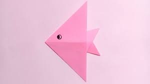
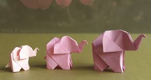
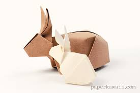
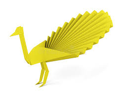

Origami Instructions and Designs
Step by step diagrams are probably the most popular and easiest to follow way to show how to fold things out of power.
Trying the find good original instructions on the internet can be a lot of work though. To help your search we've put
together the largest database of free origami designs on the internet.

Interesting facts about camels
- There are two types of camels: One humped or “dromedary” camels and two humped Bactrian camels.
- Camels have three sets of eyelids and two rows of eyelashes to keep sand out of their eyes.
- Camels have thick lips which let them forage for thorny plants other animals can't eat.

Interesting facts about chameleon
- Their feet work like salad tongs.
- Almost half of all known species live in Madagascar.
- Skin crystals enable them to change colour at will.

Interesting facts about teddy-bear
- The term bear-hug was first recorded in 1846.
- The Teddy Bears' Picnic song was originally called The Teddy Bear Two Step.
- The Oxford English Dictionary dates the first use of the term teddy bear to 1906.

Interesting facts about flying-cicida
- They're true bugs (from the order Hemiptera).
- Most have red-orange eyes.
- Females may be attracted to the sound of motors.

Interesting facts about panda
- They have great camouflage for their environment.
- Their eyes are different to normal bears.
- Cubs are well protected in their first month.

Interesting facts about pigeon
- Pigeons are incredibly complex and intelligent animals.
- Pigeons are renowned for their outstanding navigational abilities.
- Pigeons are highly sociable animals.

Interesting facts about among-us
So there is no specific interesting facts about among-us
, but it has became attractive game for kids, teenagers and some adults.

Interesting facts about fish
- Fish are vertebrate animals that live in the water.
- There are over 30000 known species of fish.
- Fish have gills that extract oxygen from the water around them.

Interesting facts about elephant
- They're the world's largest land animal.
- You can tell the two species apart by their ears.
- Their trunks have mad skills.

Interesting facts about rabbit
- A baby rabbit is called a kit, a female is called a doe and a male is called a buck.
- A rabbit's teeth never stop growing.
- Rabbits are very social creatures that live in groups.
Interesting facts about lotus
- Lotus flower protrudes several inches above the water.
- This flower is known by its beautiful odor.
- Flower opens in the morning and closes at night.

Interesting facts about peacock
- A family of peafowl is called a "bevy".
- They don't have to be killed for their feathers.
- They can fly, despite their massive trains.